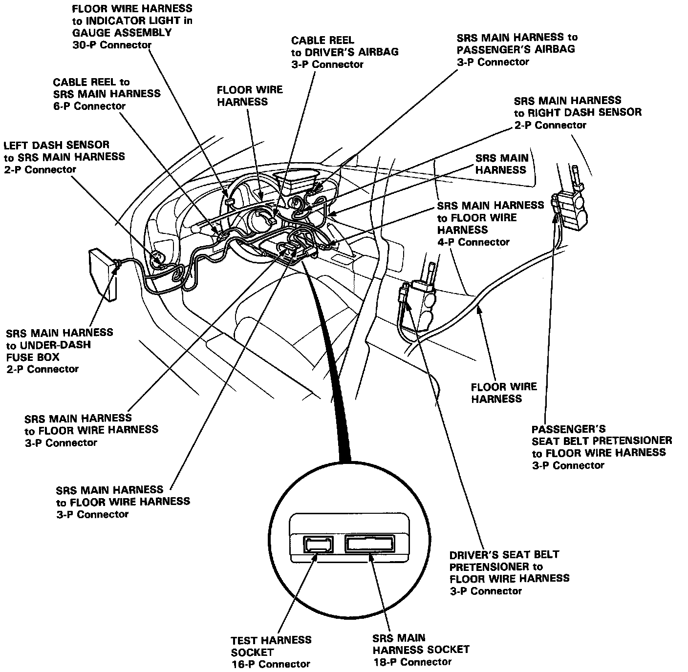

Harness Locations
WIRING LOCATIONSCAUTION: Make sure all SRS ground locations are clean and grounds are securely attached
NOTE:
- All SRS electrical wiring harnesses are covered with yellow outer insulation.
- Replace the entire affected SRS harness assembly if it has an open circuit or damaged wiring.
